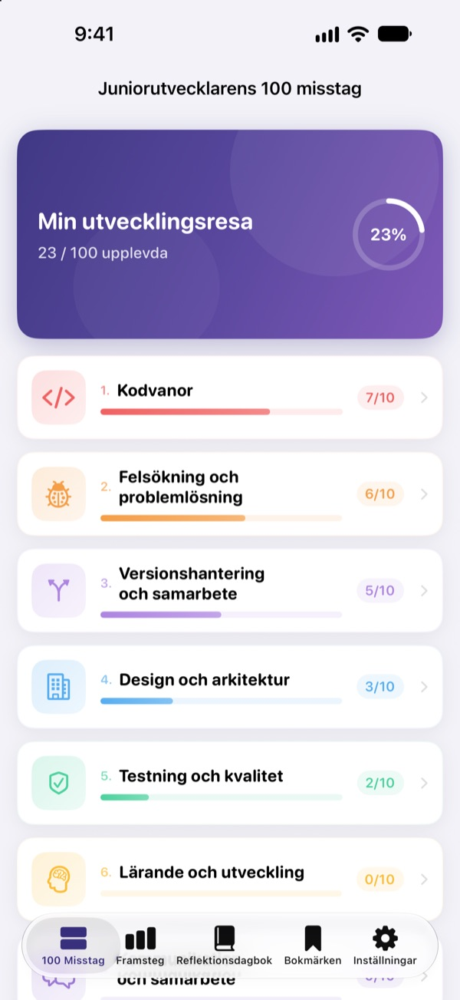
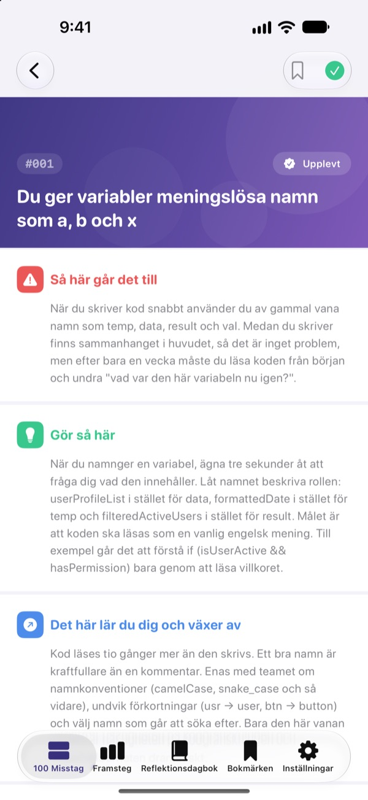
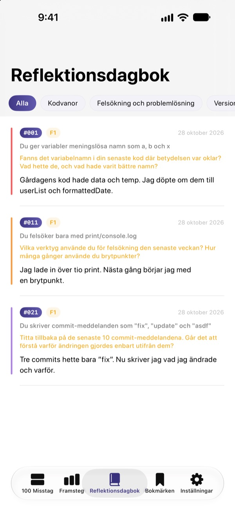
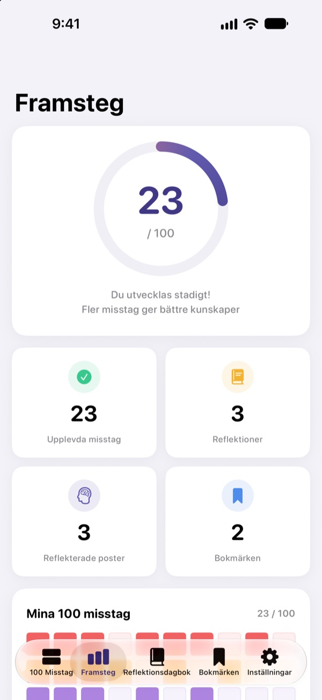

Känn till misstagen
innan de svider
De 100 misstag som nya utvecklare gör oftast, samlade på ett ställe. För varje misstag läser du vad som händer, vad du ska göra och vad du lär dig, och svarar sedan på en reflektionsfråga så att du inte gör samma misstag två gånger.
De första 30 misstagen är gratis. För iPhone, iPad och Mac.

Öppna ett misstag
Här är de 10 misstagen i den första gratiskategorin, ord för ord som i appen. Markera dem du redan har varit med om som Upplevt.
Samma kommentar i kodgranskningen igen?
Kryptiska variabelnamn, funktioner på 200 rader, kopierad kod. Alla seniorer har varit där, men oftast märker man det först när man själv går i fällan. 100 Misstag visar dig misstagen i förväg och får dig att reflektera över ditt eget arbete, så att du slutar upprepa dem.
Vad som händer, vad du gör, vad du lär dig
Varje misstag är uppdelat i tre delar: vad som händer, vad du ska göra och vad du lär dig av det.
Tio kategorier, från kodvanor till säkerhet och prestanda, med bara de misstag som dyker upp gång på gång i riktiga team.

Reflektionsfrågor som får det att fastna
Varje misstag har 4 reflektionsfrågor, 400 totalt. Svara med dina egna projekt i tankarna, så blir det du läser till erfarenhet.
Dina svar samlas i reflektionsdagboken per kategori, redo att läsas igen.

Se hur långt du har kommit
Bocka av misstagen du har varit med om, så växer dina framsteg per kategori och totalt. Lägg ett bokmärke på det du vill återvända till.
Allt synkas via iCloud mellan iPhone, iPad och Mac.

Tre steg för att komma igång
- 1
Välj en kategori
Kodvanor, felsökning och versionshantering är öppna gratis.
- 2
Läs och bocka av
Tryck på Upplevt vid de misstag du själv har gjort.
- 3
Reflektera
Skriv ett svar, gärna kort. Det hamnar i din reflektionsdagbok.
De 10 kategorierna
- Kodvanor
- #001–#010 · Gratis
- Felsökning och problemlösning
- #011–#020 · Gratis
- Versionshantering och samarbete
- #021–#030 · Gratis
- Design och arkitektur
- #031–#040 · PRO
- Testning och kvalitet
- #041–#050 · PRO
- Lärande och utveckling
- #051–#060 · PRO
- Kommunikation och samarbete
- #061–#070 · PRO
- Driftsättning och drift
- #071–#080 · PRO
- Säkerhet och data
- #081–#090 · PRO
- Prestanda och optimering
- #091–#100 · PRO
Varje kategori har 10 misstag, och varje misstag har 4 reflektionsfrågor.
30 gratis. Alla 100 med PRO.
Gratis
- De första 3 kategorierna, 30 misstag
- Deras 120 reflektionsfrågor
- Checklista, reflektionsdagbok, framsteg och bokmärken
- iCloud-synk (iPhone, iPad, Mac)
100 Misstag PRO
- De andra 7 kategorierna, 70 misstag till (#031–#100)
- 280 reflektionsfrågor till
- Alla framtida innehållsuppdateringar
Månadsvis, årsvis (upp till 50 % billigare än månadsvis) eller ett engångsköp för alltid.
Ingen insamling av personuppgifter, inga analysverktyg och inga annonser.
Vanliga frågor
Vad är gratis?
Alla 30 misstag med frågor i kategorierna Kodvanor, Felsökning och problemlösning samt Versionshantering och samarbete. Checklistan, reflektionsdagboken, framsteg, bokmärken och iCloud-synk är också gratis.
Hur använder jag PRO på en annan enhet?
Logga in med samma Apple-ID och tryck på Återställ köp på prenumerationsskärmen.
Hur säger jag upp prenumerationen?
När som helst under Inställningar › Apple-ID › Prenumerationer. Prenumerationen förnyas automatiskt om du inte säger upp den minst 24 timmar innan den aktuella perioden slutar. Köpet för alltid betalas bara en gång.
Mina data synkas inte mellan enheterna.
Kontrollera att alla enheter är inloggade på iCloud med samma Apple-ID och att iCloud är aktiverat för appen i Inställningar. Synkningen kräver också nätverksanslutning.
Hur raderar jag allt?
Tryck på Återställ all data i appens inställningar. Bockar, svar och bokmärken raderas och det går inte att ångra.
Vilka enheter fungerar den på?
iPhone, iPad och Mac. PRO låses upp på alla enheter med samma Apple-ID.
Skickas mina data någonstans?
Nej. Dina bockar och svar sparas bara på dina enheter och i din egen iCloud. Appen samlar inte in personuppgifter och har varken analysverktyg eller annonser.
Frågor eller förslag? Skriv till leeo@kakao.com.